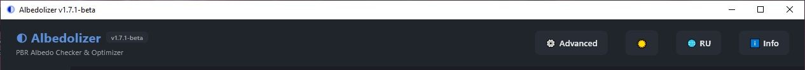
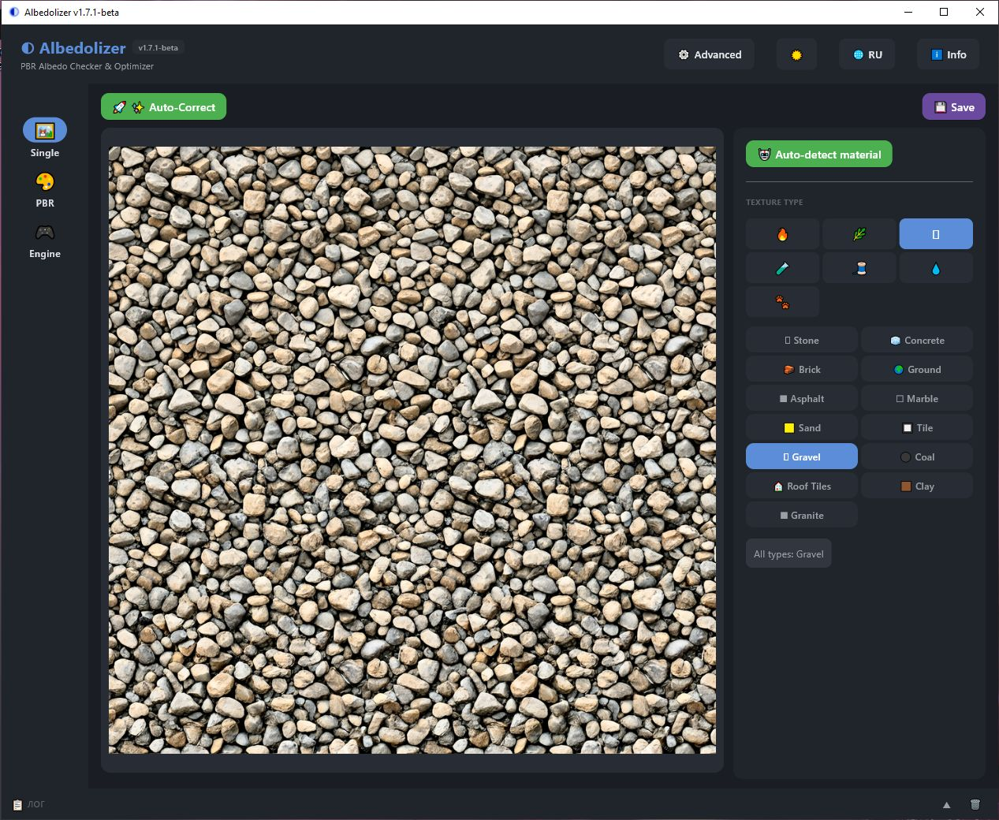
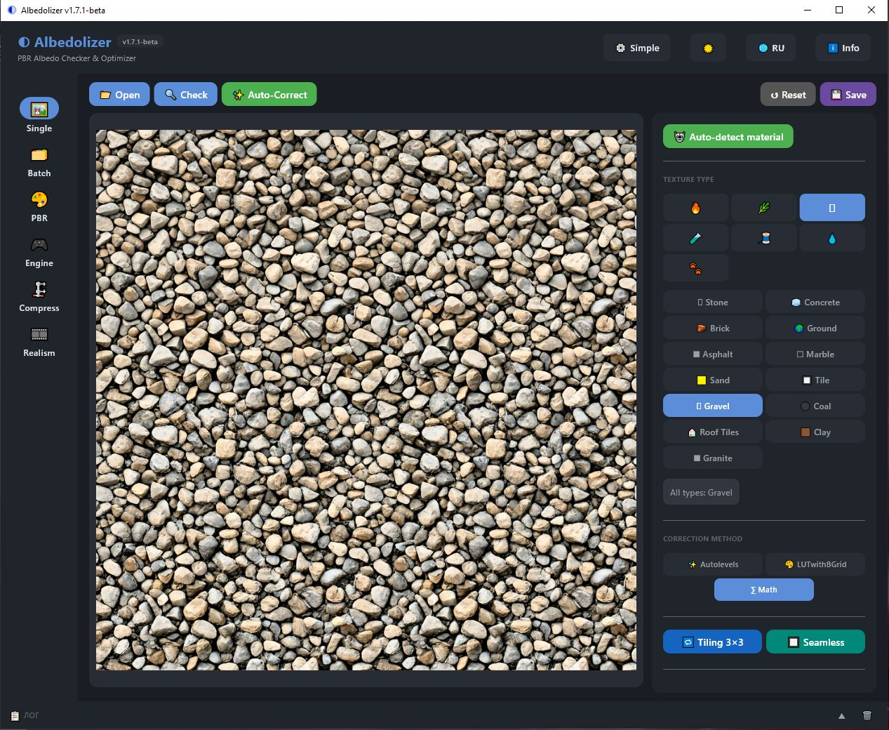
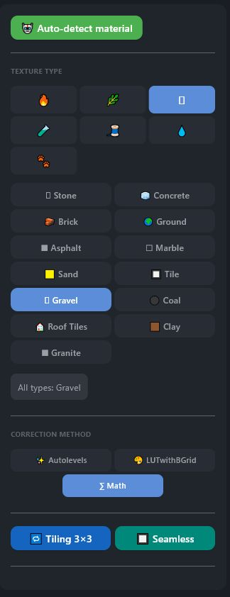
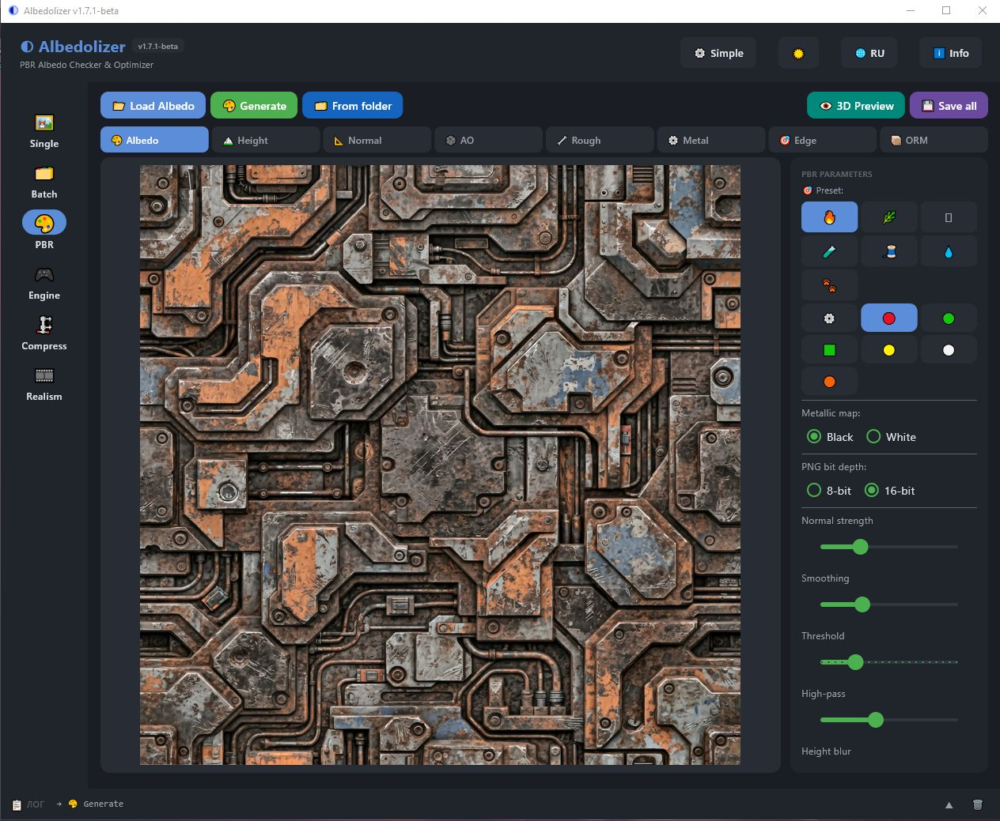
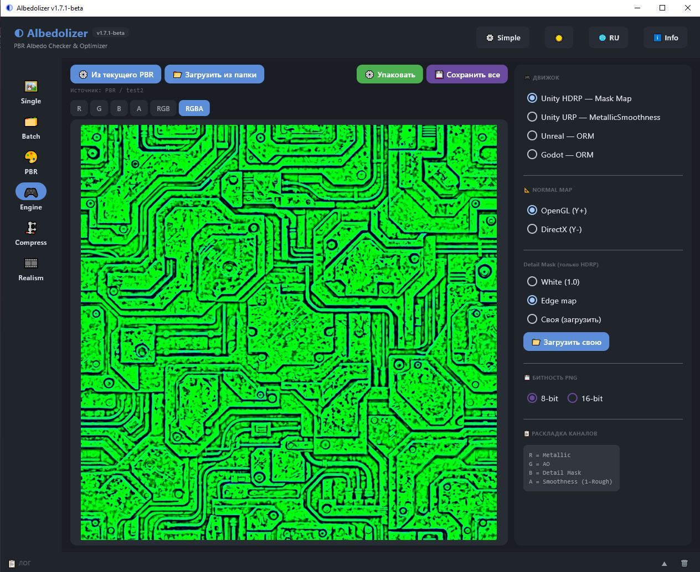

PBR Albedo Checker & Optimizer — Руководство пользователя
1. Введение
Albedolizer — standalone-инструмент для Windows для 3D-художников, геймдизайнеров и всех, кто работает с PBR-текстурами. Проверяет Albedo-карты на соответствие стандартам, автоматически корректирует цвет через AI, генерирует полный набор PBR-карт, упаковывает их под целевой движок и позволяет посмотреть результат во встроенном 3D-вьюере.
Два режима UI
Simple — воркфлоу в один клик (Open → AI correct → Save). Продвинутые инструменты скрыты.
Advanced — полный контроль. Открывает статистику, методы коррекции, удаление мыла, насыщенность, тайлинг, seamless и прочее.
Переключение режимов — кнопкой Simple / Advanced в хедере.
2. Хедер и навигация
Хедер содержит название приложения, текущую версию, переключатель режима UI, темы, языка и кнопку Info.

Рис. 1 — Хедер с кнопками режима, темы, языка и Info.
NavigationRail слева даёт доступ ко всем вкладкам:
Single — проверка и коррекция одной текстуры
Batch — обработка целой папки
PBR — генерация PBR-карт
Engine — упаковка карт под Unity / Unreal / Godot
Compress — уменьшение размера файла
Realism — процедурный фильтр фотореализма
3. Вкладка Single
Simple mode
В Simple-режиме одна кнопка делает всё: Автокоррекция. Открывает файл, запускает AI-коррекцию цвета, поднимает насыщенность и показывает результат.

Рис. 2 — Вкладка Single в Simple-режиме.
Advanced mode
В Advanced-режиме доступен полный контроль:
Выбери Texture type справа (или нажми Автоопределить материал)
Открыть — загрузить Albedo-текстуру
Проверить — посмотреть статистику и heatmap
Если FAIL → Автокоррекция
Сохранить результат

Рис. 3 — Вкладка Single в Advanced-режиме.
Совет. Используй Сброс, чтобы в любой момент сравнить скорректированное изображение с оригиналом.
4. Правая панель Single
Правая панель вкладки Single содержит всё для настройки коррекции:
Auto-detect material — CLIP-классификатор подбирает лучший пресет из 50 вариантов
Texture type — категории (Металл, Природа, Минерал, Синтетика, Ткани, Спецэффекты, Фауна) и пресеты внутри каждой
Correction method — Autolevels / LUTwithBGrid / Math
Tiling 3×3 — поиск швов на тайлящихся текстурах
Seamless — сделать текстуру бесшовной через радиальную маску + scatter
Remove soap — адаптивный unsharp mask для размытых участков
Saturation — исправить блёклые цвета после AI-коррекции
Statistics — min / max / avg / медиана / перцентили

Рис. 4 — Правая панель Single.
5. Вкладка PBR
Генерация полного набора PBR-карт из одной Albedo-текстуры.
Загрузить Albedo — выбрать текстуру
Выбрать пресет справа (слайдеры подстроятся автоматически)
Подкрутить слайдеры при необходимости (Normal strength, Smoothing, Threshold, High-pass, Height blur, AO radius, AO intensity, Rough base, Rough variation)
Сгенерировать → 7 карт
Переключаться между картами кнопками сверху: Albedo / Height / Normal / AO / Rough / Metal / Edge / ORM
3D Preview — открыть OpenGL-вьюер
Сохранить все — создаст папку <имя>_pbr/ рядом с исходником

Рис. 5 — Вкладка PBR со всеми 7 картами и слайдерами параметров.
Совет. Height и Normal сохраняются в 16-битный PNG при выборе соответствующей опции — полная точность для про-пайплайнов.
6. Engine Export
Упаковка PBR-карт под конкретный движок в один клик.
Источник
Из текущего PBR — использовать карты, только что сгенерированные во вкладке PBR
Загрузить из папки — выбрать папку с готовыми *_albedo.png, *_normal.png, *_ao.png и т.д.
Поддерживаемые движки
Движок
Раскладка
Unity HDRP
R = Metallic, G = AO, B = Detail Mask, A = Smoothness (1 − Roughness)
Unity URP
R = Metallic, G = AO, B = 0, A = Smoothness (1 − Roughness)
Unreal
R = AO, G = Roughness, B = Metallic
Godot
R = AO, G = Roughness, B = Metallic
Дополнительные опции
Normal map format — OpenGL (Y+) или DirectX (Y−) с инверсией зелёного канала
Detail Mask (только HDRP) — white (1.0) / edge map / своя, загруженная с диска
PNG bit depth — 8-bit или 16-bit
Channel preview — R / G / B / A / RGB / RGBA

Рис. 6 — Вкладка Engine Export с превью упакованной карты и контролем каналов.
Нажми Упаковать, чтобы сгенерировать упакованную карту, затем Сохранить все — запишет <имя>_<движок>_<gl|dx>/ рядом с исходником.
7. Фильтр Realism
Добавляет процедурный эффект фотореализма на Albedo-текстуры — зерно, микродетали, цветовые вариации и лёгкую виньетку.
Открыть — загрузить текстуру
Настроить три слайдера:
Grain — слои мелкого и крупного шума
Detail — адаптивный high-pass overlay для микродеталей
Albedolizer is a standalone Windows tool for 3D artists, game designers, and anyone working with PBR textures. It checks Albedo maps against standards, automatically corrects color via AI, generates a full set of PBR maps, packs them for your target engine, and lets you preview the result in a built-in 3D viewer.
Two UI modes
Simple — one-click workflow (Open → AI correct → Save). Advanced tools are hidden.
Advanced — full control. Unlocks statistics, correction methods, soap removal, saturation, tiling, seamless, and more.
Switch modes via the Simple / Advanced button in the header.
2. Header & Navigation
The header contains the app title, current version, UI mode toggle, theme switcher, language switcher, and the Info button.
Fig. 1 — Header with mode, theme, language, and Info buttons.
The NavigationRail on the left gives access to all tabs:
Single — check & correct one texture
Batch — process a whole folder
PBR — generate PBR maps
Engine — pack maps for Unity / Unreal / Godot
Compress — reduce file size
Realism — apply procedural photorealism filter
3. Single tab
Simple mode
In Simple mode, one button does everything: Auto-Correct. It opens a file, runs AI color correction, boosts saturation, and shows the result.
Fig. 2 — Single tab in Simple mode.
Advanced mode
In Advanced mode you get full control:
Pick a Texture type on the right (or click Auto-detect material)
Open — load an Albedo texture
Check — see stats and heatmap
If FAIL → Auto-Correct
Save the result
Fig. 3 — Single tab in Advanced mode.
Tip. Use Reset to compare the corrected image with the original at any time.
4. Single right panel
The right panel of the Single tab contains everything you need to configure the correction:
Auto-detect material — CLIP-based classifier picks the best preset from 50 options
Texture type — categories (Metal, Nature, Mineral, Synthetic, Fabric, Special, Fauna) and presets inside each
Correction method — Autolevels / LUTwithBGrid / Math
Tiling 3×3 — spot seams on tileable textures
Seamless — make a texture tileable with radial mask + scatter
Remove soap — adaptive unsharp mask for blurry patches
Saturation — fix washed-out colors after AI correction
Statistics — min / max / avg / median / percentiles
Fig. 4 — Single right panel.
5. PBR tab
Generate a full set of PBR maps from a single Albedo texture.
Load Albedo — pick a texture
Pick a preset on the right (sliders auto-tune)
Adjust sliders if needed (Normal strength, Smoothing, Threshold, High-pass, Height blur, AO radius, AO intensity, Rough base, Rough variation)
Generate → 7 maps
Switch between maps with the buttons on top: Albedo / Height / Normal / AO / Rough / Metal / Edge / ORM
3D Preview — open the OpenGL viewer
Save all — creates a <name>_pbr/ folder next to the source
Fig. 5 — PBR tab with all 7 maps and parameter sliders.
Tip. Height and Normal maps are saved in 16-bit PNG when selected — full precision for pro pipelines.
6. Engine Export
Pack your PBR maps for a specific engine in one click.
Source
From current PBR — use the maps you just generated in the PBR tab
Load from folder — pick a folder with existing *_albedo.png, *_normal.png, *_ao.png, etc.
Supported engines
Engine
Layout
Unity HDRP
R = Metallic, G = AO, B = Detail Mask, A = Smoothness (1 − Roughness)
Unity URP
R = Metallic, G = AO, B = 0, A = Smoothness (1 − Roughness)
Unreal
R = AO, G = Roughness, B = Metallic
Godot
R = AO, G = Roughness, B = Metallic
Additional options
Normal map format — OpenGL (Y+) or DirectX (Y−) with green channel flipped
Detail Mask (HDRP only) — white (1.0) / edge map / custom loaded from disk
PNG bit depth — 8-bit or 16-bit
Channel preview — R / G / B / A / RGB / RGBA
Fig. 6 — Engine Export tab with packed map preview and channel controls.
Click Pack to generate the packed map, then Save all to write <name>_<engine>_<gl|dx>/ next to the source.
7. Realism filter
Add a procedural photorealism effect to Albedo textures — grain, micro-detail, color variation, and a subtle vignette.
Open — load a texture
Tune three sliders:
Grain — fine and coarse noise layers
Detail — adaptive high-pass overlay for micro-detail
Tip. For 8K textures the filter may take a few seconds — a progress bar shows the status.
8. Batch processing
Process a whole folder of textures at once with AI correction or compression.
Select folder or Select files
Choose correction method (Autolevels / LUTwithBGrid / Math) on the right
Set threads count (1–8 parallel tasks)
Optionally tune Remove soap strength
Run processing
Fig. 8 — Batch processing with thread controls.
Results are saved to a _corrected folder next to the sources.
9. Compression
Reduce file size of Albedo textures without losing visual quality.
Single compression — Open a file, click Compress, then Save
Batch compression — Select folder or Select files, then Compress folder
Choose 8-bit or 16-bit PNG on the right panel.
Fig. 9 — Compression tab with bit depth selector.
Results go to a _compressed folder next to the sources.
10. Log panel
At the bottom of the window there is a single shared log panel. When collapsed, it shows only the last line. Click the header to expand it and see the full history.
Fig. 10 — Log panel: collapsed (bottom) and expanded (top).
Click the log header to toggle collapsed / expanded
Click the clear button to wipe the log
11. 3D Viewer
Preview your PBR result on a shape in real time, with HDRI lighting and blurred reflections.